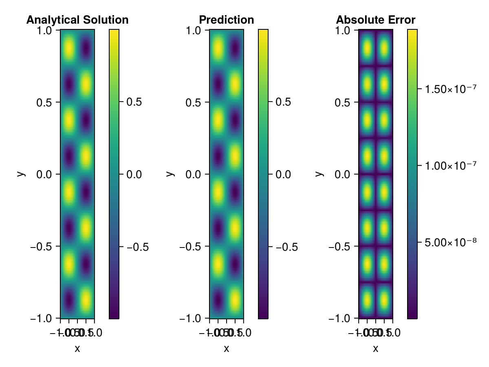

Helmholtz equation
Let us consider the Helmholtz equation in two space dimensions
\[\begin{aligned} &\Delta u(x, y)+k^{2} u(x, y)=q(x, y), \quad(x, y) \in \Omega:=(-1,1)^2 \\ &u(x, y)=0, \quad(x, y) \in \partial \Omega \end{aligned}\]
where
\[q(x, y)=-\left(a_{1} \pi\right)^{2} \sin \left(a_{1} \pi x\right) \sin \left(a_{2} \pi y\right)-\left(a_{2} \pi\right)^{2} \sin \left(a_{1} \pi x\right) \sin \left(a_{2} \pi y\right)+k^{2} \sin \left(a_{1} \pi x\right) \sin \left(a_{2} \pi y\right).\]
The exact solution is $u(x,y)=\sin{a_1\pi x}\sin{a_2\pi y}$. We chose $k=1, a_1 = 1$ and $a_2 = 4$.
using ModelingToolkit, IntervalSets, Sophon, Lux, Zygote
using Optimization, OptimizationOptimJL
@parameters x,y
@variables u(..)
Dxx = Differential(x)^2
Dyy = Differential(y)^2
a1 = 1
a2 = 4
k = 1
q(x,y) = -(a1*π)^2 * sin(a1*π*x) * sin(a2*π*y) - (a2*π)^2 * sin(a1*π*x) * sin(a2*π*y) + k^2 * sin(a1*π*x) * sin(a2*π*y)
eq = Dxx(u(x,y)) + Dyy(u(x,y)) + k^2 * u(x,y) ~ q(x,y)
domains = [x ∈ Interval(-1,1), y ∈ Interval(-1,1)]
bcs = [u(-1,y) ~ 0, u(1,y) ~ 0, u(x, -1) ~ 0, u(x, 1) ~ 0]
@named helmholtz = PDESystem(eq, bcs, domains, [x,y], [u(x,y)])\[ \begin{align} u\left( x, y \right) + \frac{\mathrm{d}}{\mathrm{d}y} \frac{\mathrm{d}}{\mathrm{d}y} u\left( x, y \right) + \frac{\mathrm{d}}{\mathrm{d}x} \frac{\mathrm{d}}{\mathrm{d}x} u\left( x, y \right) =& - 166.78 \sin\left( 12.566 y \right) \sin\left( 3.1416 x \right) \end{align} \]
Note that the boundary conditions are compatible with periocity, which allows us to apply BACON.
chain = BACON(2, 1, 5, 2; hidden_dims = 32, num_layers=5)
pinn = PINN(chain)
sampler = QuasiRandomSampler(300, 100)
strategy = NonAdaptiveTraining()
prob = Sophon.discretize(helmholtz, pinn, sampler, strategy)
@showprogress res = Optimization.solve(prob, BFGS(); maxiters=1000)u: ComponentVector{Float64}(filters = (filter_1 = (bias = [-0.6255384647968831; 0.4478183975175449; … ; 0.6555221086067973; -0.5100223718844952;;]), filter_2 = (bias = [0.2931946789325787; 0.4896094396786861; … ; 0.002997176300327823; 0.7360560730358376;;]), filter_3 = (bias = [0.3291957726416717; -0.7804640048964138; … ; -0.5721845938749522; -0.4170057005009983;;]), filter_4 = (bias = [-0.8213494908199587; -1.24894569741158; … ; 0.06175976325801659; -0.359256622446632;;]), filter_5 = (bias = [-0.41252665525400406; -0.3304464619420795; … ; -0.12297825729647187; 0.727610924345926;;])), linear_layers = (layer_1 = (weight = [-0.025211836630972262 0.09548434134871678 … 0.10382282376137277 -0.1410729577012635; -0.3220096417618327 0.27079153940722317 … -0.09592322816687683 -0.3759374461076556; … ; 0.20819023580961657 -0.07349719901679788 … -0.3510563967733344 -0.08015713483426297; -0.07130974874619612 0.18520598949478662 … 0.3233420296020357 0.11267813823927167], bias = [0.028224518662307487; 0.025122368518064743; … ; -0.03317355166366756; -0.017919360401437955;;]), layer_2 = (weight = [0.1533633015605147 0.36021506889908544 … -0.35694389012510547 -0.04639869755142049; -0.45345415076828577 0.07505182432718842 … -0.2914316301024384 0.2196816690025185; … ; 0.0967107006672804 0.17253429799804557 … -0.03634390819380528 0.3325027658900132; -0.057114860049505535 -0.3521126661709301 … 0.15088354043210275 0.33298757276678786], bias = [-0.00652429546116321; -0.03254197030132282; … ; -0.00010450903598037077; 0.00948099954133685;;]), layer_3 = (weight = [0.24742583419061462 0.4033755267099494 … -0.12274613888052038 0.2558703900178045; -0.24954471937399192 0.29827526773068874 … 0.05711997457470398 -0.10166724877330399; … ; -0.2694301819133575 -0.004397795341894797 … 0.4425121458307919 0.20622010569583676; -0.3828369385237531 -0.06896663108317144 … -0.19819929058196745 0.07272049854612704], bias = [-0.003960110644943767; 0.024303580185574443; … ; 0.005590693658899649; -0.021397570041328993;;]), layer_4 = (weight = [-0.011358868563663761 -0.04978470050507138 … -0.39158813887937965 -0.346924429902487; 0.15393613001581827 0.17614005166489813 … 0.15778340918365552 0.4156640733141999; … ; 0.17583062828216642 -0.13797589143558425 … -0.26543010311860504 -0.3572395825366853; -0.039932204821362026 0.28011860929960963 … 0.1425311770964111 0.3343645885516666], bias = [-0.015250851218397535; 0.004671965565996269; … ; -0.008012569674310742; 0.005174408459128054;;])), output_layer = (weight = [0.42594081701811937 -0.07539141573244947 … 0.1902882361196964 0.16129710770478414], bias = [0.03997627621912413;;]))Let's plot the result.
phi = pinn.phi
ps = res.u
xs, ys= [infimum(d.domain):0.01:supremum(d.domain) for d in domains]
u_analytic(x,y) = sinpi(a1*x)*sinpi(a2*y)
u_real = [u_analytic(x,y) for x in xs, y in ys]
u_pred = [sum(phi(([x,y]), ps)) for x in xs, y in ys]
using CairoMakie
axis = (xlabel="x", ylabel="y", title="Analytical Solution")
fig, ax1, hm1 = heatmap(xs, ys, u_real, axis=axis)
Colorbar(fig[:, end+1], hm1)
ax2, hm2= heatmap(fig[1, end+1], xs, ys, u_pred, axis= merge(axis, (;title = "Prediction")))
Colorbar(fig[:, end+1], hm2)
ax3, hm3 = heatmap(fig[1, end+1], xs, ys, abs.(u_pred-u_real), axis= merge(axis, (;title = "Absolute Error")))
Colorbar(fig[:, end+1], hm3)
fig